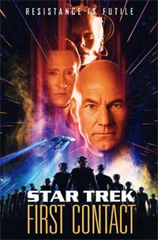
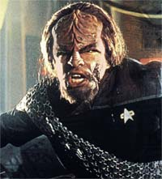
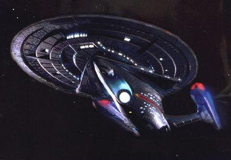
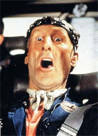
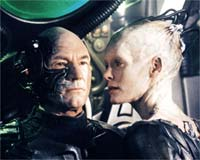
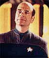
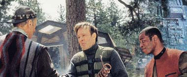

|

Clique aqui
para visitar o
Acervo de colunas


|
Quando os Vulcanos Chegaram     Para que as intenes de Picard e Riker dessem certo, eles tinham de contar com o apoio de Cochrane, na superfcie, e de Lily (Alfre Woodard), sua amiga, a bordo. Ambos se espantam com a Frota e duvidam inicialmente de seus objetivos porque vivem um perodo bastante tumultuado. A situao da humanidade de frangalhos por conta da guerra que envolveu todos os povos do planeta nos sculos 21 e 22.Mas a presena sensualssima da Rainha Borg (Alice Krige) e seu envolvimento como andride data e o capito Picard que se tornam o fio condutor para o desfecho bem-sucedido da aventura.  Picard e Data j tinham se tornado os principais personagens da Nova Gerao, segundo o que Rick Berman (produtor-executivo) j tinha estabelecido, apesar de os crditos apresentarem Picard e Riker como os personagens principais.A liderana natural de Picard foi mantida, mas o segundo lugar de destaque foi conquistado pelo andride em funo do grande trabalho de interpretao de Brent Spiner ao longo da srie e do filme anterior. Jonathan Frakes, que interpreta Riker, se saiu muito bem como diretor de bons episdios e por isso foi convidado por Berman a aceitar o desafio de dirigir e atuar no filme, conforme ocorreu anteriormente com Leonard Nimoy e William Shatner. O filme seguiu uma caracterstica de violncia explcita, necessria no contexto dos Borgs, mas adotada pelo sucesso que faria com o pblico. Por esta razo, h muitas cenas de batalha, perseguio e briga, apresentadas de modo equilibrado por Frakes. Ele resolveu inovar mostrando como seria a viso dos Borgs, utilizando cmeras de grande angulao. As tomadas tanto no espao como na superfcie so caprichadas atravs da representao dos personagens e dos efeitos especiais, resultado da longa convivncia de trabalho. Como do seu estilo, apesar do perigo, h boas doses de humor nos dilogos e o seu sentimento foi de grande alegria e prazer por ser feito um bom trabalho, segundo as entrevistas. Algumas cenas so memorveis, como a abertura que termina no fundo do olho e da alma de Picard, a batalha da Enterprise e da Defiant no espao, a luta contra a construo do sinalizador no exterior da nave, a montagem da rainha borg e a excitao provocada em Data, a cena do "holodeck", quando Picard revive seu dolo Dixon Hill, e o confronto de Lily e Picard citando o capito Ahab, de "Moby Dick".  Isso sem falar em uma brilhante ponta feita por Robert Picardo (o Doutor de Voyager), aparecendo como um programa hologrfico mdico de emergncia recm-instalado na Enterprise. Outro ator de Voyager que faz uma ponta no filme Ethan Phillips (Neelix), no papel de recepcionista, dentro do programa de holodeck de Dixon Hill.Picard est mais bravo e metido a lutador. Deve ter sido por causa do seu encontro com Kirk no filme anterior. Na superfcie da Terra, vale lembrar o primeiro dilogo da tripulao com um Cochrane desconfiado e arredio, o desembarque da nave auxiliar Vulcana, o "rock'n roll" da vitrola e a citao visual a "Jornada nas Estrelas V - A ltima Fronteira" no acampamento de Montana. importante dizer que na conversa com Cochrane com a tripulao pronunciado pela primeira vez o nome "Jornada nas Estrelas" num episdio ou filme. A interpretao de Cromwell caiu muito bem para um personagem que famoso na histria da Federao como um grande cientista e dolo de muita gente, como os engenheiros La Forge e Barclay.  Ao mesmo tempo que um homem venerado, quer ser tratado como um outro qualquer. Fazendo uma comparao com o Zefram Cochane interpretado por Glenn Corbett em "Metamorphosis", da Srie Clssica, a diferena significativa. Isso para lembrarmos que os grandes heris so to virtuosos ou defeituosos como os outros humanos. Tambm, lembro aqui de uma das melhores frases que sintetizam o esprito de Jornada, dita de Picard para Lily: "Dinheiro no existe no sculo 24... a aquisio de fortuna no mais uma motivao para ns. Procuramos nos melhorar e ao resto da humanidade". A participao do elenco coadjuvante foi das mais equilibradas, cada qual com seus momentos de glria, mas no tivemos a presena de Guinan (Whoopi Goldberg). Os produtores anunciaram a presena de um personagem homossexual, no-explcito, o que recai nossas suspeitas sobre o tenente Hawk. O filme foi muito bem recebido pelo pblico e pela crtica, gerando uma maravilhosa fatura de bilheteria e ajudando a alimentar mais uma vez a mquina de sonhos da Paramount e as possibilidades de sucesso no cinema e nas verses televisivas de ento: Deep Space Nine e Voyager. A histria de Rick Berman, Ronald Moore e Brannon Braga, a msica de Jerry Goldsmith e os cenrios de Herman Zimmermann foram muito bons. Resistir foi intil. No final do filme, eu, Luiz Cludio (colunista do TB) e a turma do saudoso Jetcom samos do cinema sorrindo, uivando de alegria e batendo palmas. A Nova Gerao enfim provou que poderia ser to boa nas telas quanto na televiso. Estava tudo indo bem at que um pouquinho de poeira estelar entrou nas naceles e fizeram a nave engasgar um pouquinho na sua prxima aventura na tela grande.
Cludio Silveira escreve regularmente sobre os filmes com exclusividade para o Trek Brasilis |
 "Jornada
nas Estrelas - Primeiro Contato" mostrou o encontro da
tripulao da Enterprise-E de Jean-Luc Picard com os Borgs e sua
tentativa de evitar o contato dos humanos com os Vulcanos. Em razo
da tecnologia da dobra espacial ter sido alcanada pelo doutor
Zefram Cochrane (James Cromwell), os Vulcanos resolveram estabelecer
comunicao direta com a Terra em terceiro grau, por avaliarem ter
a espcie humana "evoludo" satisfatoriamente a ponto de
conhecer outras espcies.
"Jornada
nas Estrelas - Primeiro Contato" mostrou o encontro da
tripulao da Enterprise-E de Jean-Luc Picard com os Borgs e sua
tentativa de evitar o contato dos humanos com os Vulcanos. Em razo
da tecnologia da dobra espacial ter sido alcanada pelo doutor
Zefram Cochrane (James Cromwell), os Vulcanos resolveram estabelecer
comunicao direta com a Terra em terceiro grau, por avaliarem ter
a espcie humana "evoludo" satisfatoriamente a ponto de
conhecer outras espcies.